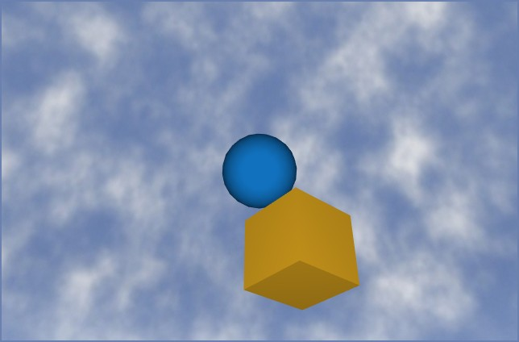

Camera
Class phx.Camera | Superclass: phx.base.Object
phx.Camera attaches the camera position and target of the scene
view to selected bodies. The camera looks from the first body towards the second body, following
both as they move — e.g. a chase camera mounted on a vehicle, or a fixed observer tracking a
flying object. The camera drives either a phx.extra.Viewer or a
plain axes (whichever is found in the current figure, or set explicitly via
Viewer). It can also record the view into a video file
(MPEG‑4) at a frame rate based on simulation time.
cam = phx.Camera(bodyA,bodyB) creates a camera looking from body A
to body B, respecting their points of origin. A custom offset to both points of origin can be set
using the PointA and PointB
properties.
| Argument | Type | Description |
|---|---|---|
| bodyA | phx.Body (scalar) | The body the camera position is attached to. |
| bodyB | phx.Body (scalar) | The body the camera target is attached to. |
| Property | Type / Default | Description |
|---|---|---|
| PointA | [0 0 0] | Connecting point in the local space of the first body (camera position offset). |
| PointB | [0 0 0] | Connecting point in the local space of the second body (camera target offset). |
| Viewer | [] | PHX viewer or axes to drive. Empty picks the phx.extra.Viewer of the current figure, or the current axes. |
| RecordFile | string | Video file name. When set, the view is recorded to an MPEG‑4 file during the simulation. |
| RecordFPS | 30 | Video frame rate based on simulation time, frames/s. |
phx.extra.Viewer("clear"); ball = phx.Body("Position", [0 0 3], "LinearVelocity", [0.5 0 0], "Shape", {"Sphere"}); chase = phx.Body("Position", [4 4 8], "Visible", false); phx.Body("Type", "static"); phx.Camera(chase, ball); sim = phx.Simulation; sim.step(3, 600, 2); delete(sim);

phx.Camera(chase, ball, "RecordFile", "flight.mp4", "RecordFPS", 60);